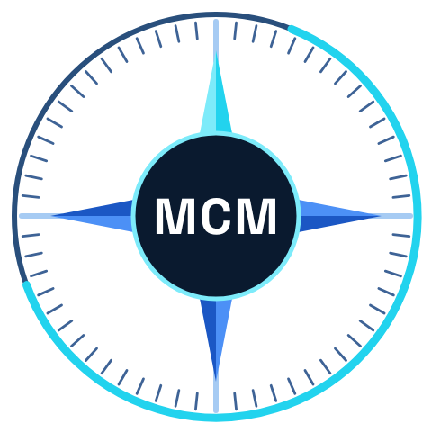

Pedro J. Cardona Acevedo
I build the systems
businesses run on.
I design and ship production software for real organizations, from government agencies to growing businesses, turning manual, phone-call-driven workflows into systems that run themselves. I focus on tools that fit how people actually work.
Selected Work
About
I'm a senior studying Enterprise Technology Integration with a Business Fundamentals Certificate at Penn State, building production software for real businesses while enrolled. My work sits at the intersection of operations, product, and engineering. I find what's broken, then build what fixes it.
I've shipped Power Apps and Power BI systems still used daily at a construction company, and I'm currently rebuilding that same company's entire ops stack from scratch in React and Firebase. I care about tools that fit how people actually work, not tools that force people to change how they work.
Looking for Roles where the work is hands-on and the impact is real. I'm pursuing a Top Secret security clearance and am interested in positions in technology, intelligence, or operations where I can build things that matter, not just maintain them.
Business Fundamentals Certificate
Penn State / Senior
e-STEPS / HOD Investment internships

Hiring a contractor instead of a W-2 employee? I take on contract engagements through my LLC, a technology contractor based in Puerto Rico. You get the same builder behind the work above, set up as a business you can contract and invoice directly.
Résumé
Summary
Business and BI analyst on Puerto Rico's government ERP modernization (PeopleSoft to Oracle Fusion Cloud) and the program team's backup cloud and AI engineer. Turns fragmented production data into verified dashboards and decision-ready analysis and builds workflow automations with AI coding agents. Reconciled $3.9B in purchase orders to the cent across eight finance systems. Earlier, the report runtimes cut ~40% at e-STEPS and moved 50+ field crews off paper timesheets at HOD Investment. Bilingual English/Spanish.
Experience
Technology consulting firm leading technical architecture, stabilization, and reporting workstreams for the Government of Puerto Rico's ERP modernization, a PeopleSoft to Oracle Fusion Cloud migration spanning Finance, Supply Chain, and Procurement across dozens of agencies.
Education
Bachelor of Science Enterprise Technology Integration · GPA: 3.21/4.00
Relevant coursework: Advanced Enterprise Integration, Enterprise Information Management and Storage Architecture, Organization of Data, Development and Documentation of Enterprise Web, IT Project Management
Business Fundamentals Certificate (in progress)
Skills
AI & Automation: AI coding agents (Claude Code, Claude API), prompt design, AI workflow automation, API integrations, and testing and verification of AI-generated code in Python and JavaScript
Cloud & Enterprise Platforms: Oracle Fusion Cloud ERP (Payables, Procurement, Budgetary Control, General Ledger), Microsoft Azure Power Platform, Power Apps, AWS, Google Cloud (Firebase), Vercel
Data & BI: SQL (query optimization, indexing, joins), Power BI, Excel, ETL workflows, data warehouse reporting requirements, dashboard development, large-scale data reconciliation
Development: JavaScript, Java, React, Vite, Node.js, HTML/CSS, REST APIs, Git/GitHub
Consulting & Delivery: Current-state process mapping, gap analysis, requirements gathering, testing, change management, user training, executive stakeholder communication, Agile, bilingual English/Spanish documentation
Featured Projects
Directed and tested tools built with AI coding agents for real users: a contract-generation automation for a billboard permitting practice that replaced one-by-one manual drafting, and a Quizlet-style study app used by medical students.
Team campus occupancy app; led the multi-layer class architecture spanning facility types, sensor inputs, user roles, prediction models, and a real-time dashboard.
Solo-built React/Firebase property management platform automating rent, expense, cashflow, and ROI tracking, with AI assistants for portfolio analysis.
Solo-built React/Firebase learning platform for trading, finance, and real estate, with real-time market data APIs and AI strategy bots that analyze user decisions.